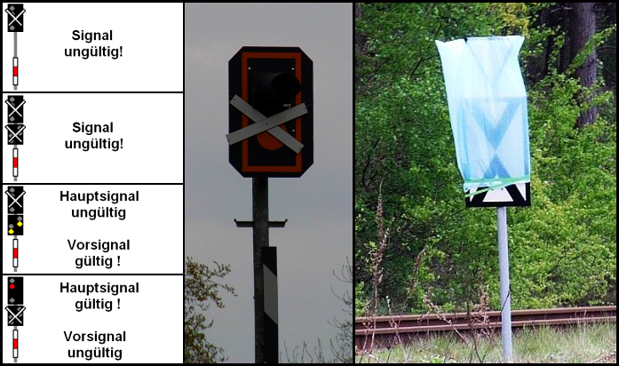

Signalbuch-Online
Ungültige Signale
Ein ungültiges Signal ist durch ein weißes Kreuz mit schwarzem Rand gekennzeichnet oder es ist verdeckt.
Außerdem werden ungültige Formsignale bei Dunkelheit nicht beleuchtet, ungültige Lichtsignale gelöscht.
Ist das Signal Lf 1 durch ein weißes Kreuz mit schwarzem Rand als ungültig gekennzeichnet, sind die Signale Lf 2 und Lf 3 nicht aufgestellt oder verdeckt. Die gelben Lichter leuchten während der Dunkelheit.
Ist das Signal El 3 durch ein weißes Kreuz mit schwarzem Rand als ungültig gekennzeichnet, sind die Signale El 4 und El 5 nicht aufgestellt oder verdeckt. Es ist bei Dunkelheit beleuchtet.